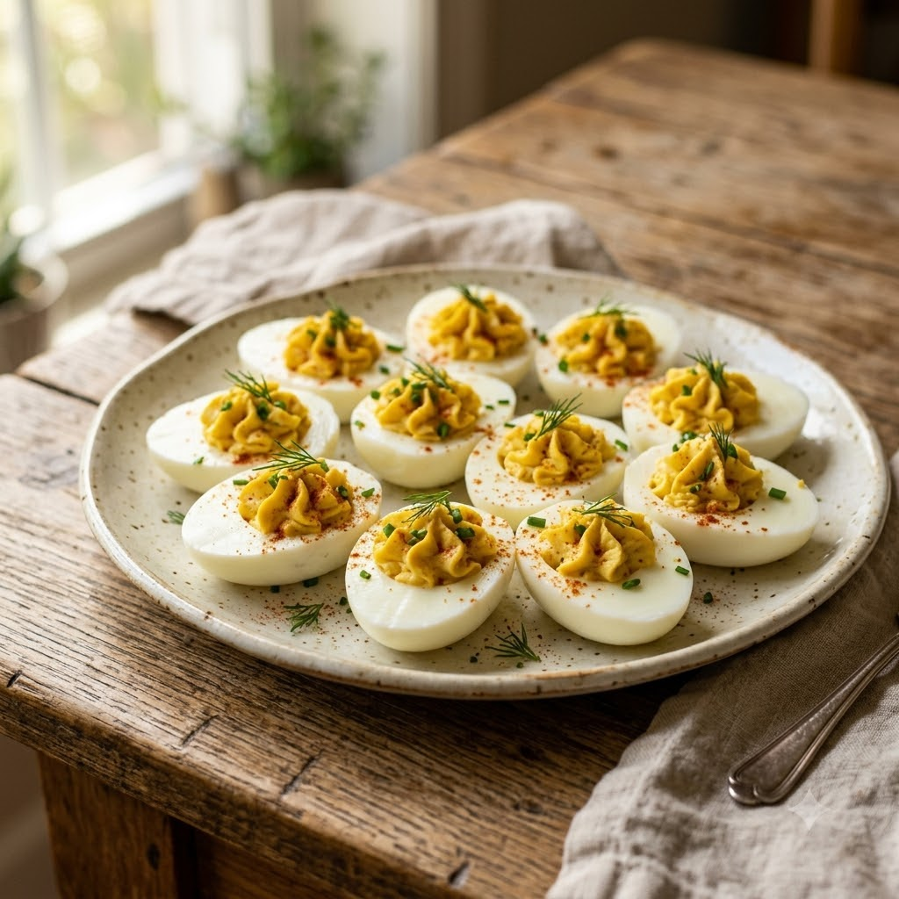

Deviled Eggs

Deviled Eggs
No-Cook — 10 min — makes 12 halves
Gluten-Free • Eggetarian • No-Cook Finish • Everyday
Prep ahead: Use the Air Fryer Perfect Boiled Eggs recipe elsewhere in this book to hard-boil the eggs ahead of time.
Ingredients
- 6 hard-boiled eggs, halved
- 3 tbsp mayonnaise
- 1 tsp mustard
- 1/4 tsp roasted cumin powder (bhuna jeera powder)
- Pinch of red chilli powder (lal mirch powder) or paprika
- Salt to taste
- Chopped coriander (dhania) or chives, to garnish
Method
1Scoop the yolks into a bowl, keeping the whites intact.
2Mash the yolks with mayonnaise, mustard, cumin powder and salt until smooth.
3Spoon or pipe the mixture back into the egg white halves.
4Dust with chilli powder or paprika and scatter with coriander.
5Chill for 15 minutes before serving.